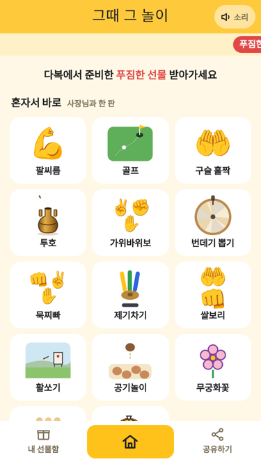
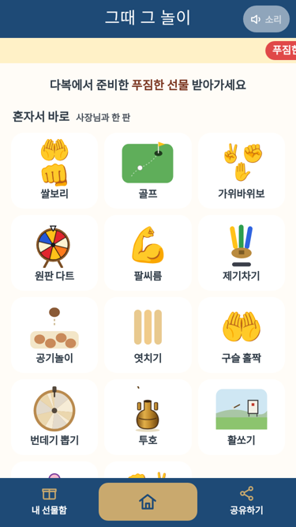
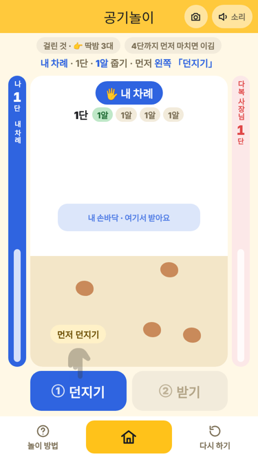
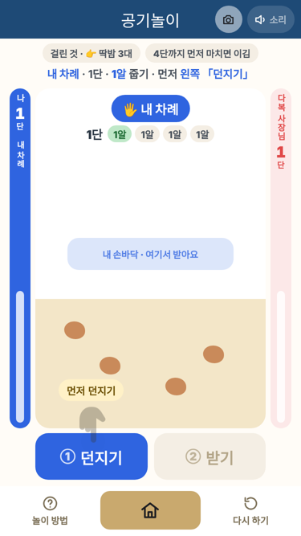
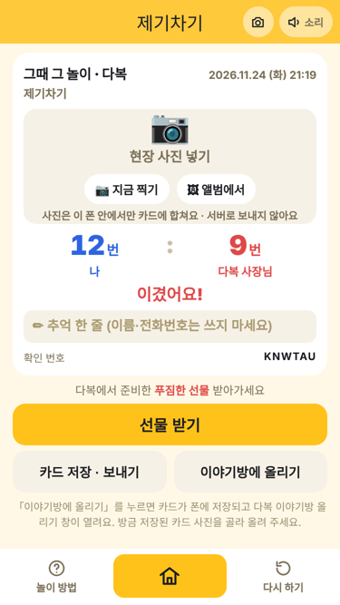
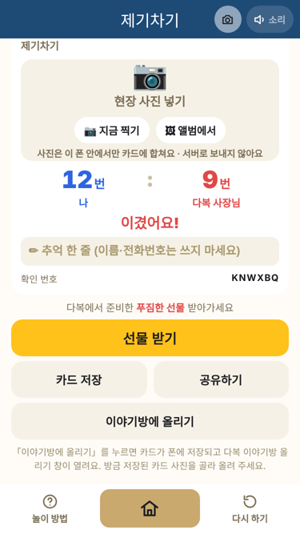
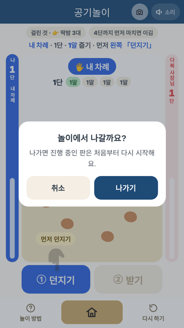
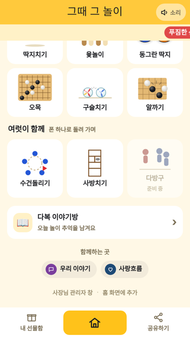
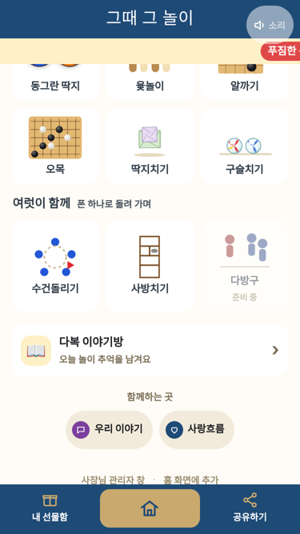

| 칸 | 값 |
|---|---|
| 발신 | 그때 그 놀이 이사 |
| 수신 | 대표 황규찬 |
| 참조 | 사랑흐름 총괄 (알림 문서 놀이-총괄-011) |
| 회신 요청 | 있음 (6장 여섯 가지) |
| 회신 받을 곳 | 이 방 대화 |
| 회신 파일 이름 | 해당 없음 |
| 회신 기한 | 정하지 않음 |
앞 문서: 놀이-총괄-010 (충돌 목록) · 대표 지시 2026-11-24 21:04 「말은 그냥 고치고, 외관 · 색 · 톤은 변경 전후를 보고하고 승인받은 뒤 바꿀 것」
1바로 고친 말 완료 · 시험판
시험판(/nori/lab/)에 들어가 있어요. 손님 화면(/nori/)은 아직 그대로예요 (6장 1번).
| 곳 | 전 | 후 |
|---|---|---|
| 놀이 화면 아래 띠 | 게임 방법 | 놀이 방법 |
| 놀이 화면 아래 띠 | 다시 | 다시 하기 |
| 첫 화면 공유하기 안내 | 주소를 복사했어요 · 주소 복사가 안 돼요 | 링크를 복사했어요 · 링크를 복사하지 못했어요 |
| 사장님 관리자 창 | 기록 모두 지우기 | 이 폰 기록 삭제 |
| 홈 화면에 추가 안내 | 브라우저 메뉴에서 … | 화면 위 메뉴(⋮ 또는 공유 단추)에서 … |
| 말로 내기 안내 | 이 브라우저는 「말로 내기」를 못 해요 | 이 화면에서는 「말로 내기」를 쓸 수 없어요 |
| 놀이 규칙 한 줄 | 끝까지 넘기면 이김 · 두 번 먼저 이기면 끝 · 3번 먼저 이기면 끝 · 벌칙 없이 끝 · 한 번 더 걸리면 끝 · 무르기 끝 · 판이 끝났습니다 | 다 넘기면 이김 · 두 번 먼저 이기면 이김 · 3번 먼저 이기면 이김 · 벌칙 없이 마쳐요 · 한 번 더 걸리면 져요 · 무르기 다 씀 · 판을 마쳤어요 |
| 놀이 방법 · 안내 (모든 놀이 54곳) | 「~습니다 · ~ㅂ니다」 (이깁니다 · 받습니다 · 던집니다 …) | 「~요」 (이겨요 · 받아요 · 던져요 …) · v0.2 3장 1 |
점검: 놀이 22가지를 모두 열어 아래 띠 「놀이 방법 · 다시 하기」 확인 · 공기놀이 · 번데기 돌림판 · 가위바위보 한 판 끝까지 · 오류 0.
2색 바꾸기 (가 안) 승인 필요
화면 틀(위 띠 · 바탕 · 글자 · 아래 띠 · 홈 단추)만 v0.2 색으로 바꾸고, 놀이판 안(나 파랑 · 상대 빨강 · 힘 기둥 · 공깃돌 · 원판 · 번데기판)은 그대로 둬요.
위 띠 노랑 #FFC93C 를 남색 #1E4A76 으로 · 바탕 #FFF8E6 를 #FFFCF7 로 · 글자 #1C1D21 를 #2E3A46 으로 · 홈 단추 노랑 #FFC21A 를 골드 #C9A96E 로.
위 띠 노랑 #FFC93C 를 남색 #1E4A76 으로 · 바탕 #FFF8E6 를 #FFFCF7 로 · 글자 #1C1D21 를 #2E3A46 으로 · 홈 단추 노랑 #FFC21A 를 골드 #C9A96E 로.




「나」 안: 놀이 전체를 부록 예외로 두고 지금 색을 그대로 유지. 이사 제안은 가 안이에요. 나 파랑 · 상대 빨강은 놀이 규칙이라 바꾸지 않아요.
3결과 카드 단추 둘로 나누기 승인 필요
v0.2 2장 4 「한 단추 한 동작」. 카드 저장 · 보내기 하나를 카드 저장 + 공유하기 둘로, 「이야기방에 올리기」는 아래 한 줄로 옮겨요. 단추가 하나 늘어요.


4놀이에서 나갈 때 알리기 승인 필요
v0.2 6장 4 「나가면 진행 상태를 미리 안내」. 지금은 놀이 중에 홈을 누르면 하던 판이 말없이 사라져요. 판이 진행 중일 때만 이 창을 띄우고, 단추는 취소 / 나가기 두 개예요. 판이 끝났거나 시작 전이면 바로 나가요.

5누르는 곳 48 이상 승인 필요
v0.2 4장 4. 실제로 잰 작은 단추: 소리 59×34 · 우리 이야기 108×34 · 사랑흐름 94×34 · 사장님 관리자 창 84×28 · 홈 화면에 추가 73×28 · 공깃돌 44×44. 모두 높이 48 이상으로 키워요. 첫 화면 아래쪽이 조금 길어지고, 공깃돌은 누르는 곳만 커지고 보이는 돌 크기는 그대로예요.


6이 방에서 유지해야 할 것 (부록 예외 제안)
- 놀이판 안 색: 나 파랑 · 상대 빨강 · 힘 기둥 · 원판 네 색 · 번데기판 나무색. 누가 누군지 한눈에 가르는 놀이 규칙이에요.
- 놀이 외침 글자: 「끝!」 「4단 끝!」 「시간 끝」처럼 판이 끝날 때 크게 뜨는 글자. 상태 안내가 아니라 놀이 소리예요. (규칙 설명의 「끝」은 1장에서 이미 고침)
- 흐르는 「푸짐한 선물」 띠: 첫 화면에 있어야 효과가 난다는 대표님 지시(2026-11-23)라 그대로 둬요.
- 「다복 사장님」 부르는 말: 상대를 가게 상호로 부르는 대표님 결정(2026-11-22).
7대표님 판단 부탁
1. 1장 말 고침을 손님 화면에도 먼저 넣을까요? (손님 화면은 지금 v3.0 이라, 넣으려면 윷놀이 · 번데기 돌림판을 뺀 판으로 따로 만들어 올려요)
2. 2장 색: 가 안 / 나 안
3. 3장 결과 카드 단추 둘: 좋아요 / 그대로
4. 4장 나가기 확인 창: 좋아요 / 그대로
5. 5장 48 키우기: 좋아요 / 그대로
6. 6장 유지할 것 넷을 그때 그 놀이 부록 예외로 총괄에 올릴까요?
2. 2장 색: 가 안 / 나 안
3. 3장 결과 카드 단추 둘: 좋아요 / 그대로
4. 4장 나가기 확인 창: 좋아요 / 그대로
5. 5장 48 키우기: 좋아요 / 그대로
6. 6장 유지할 것 넷을 그때 그 놀이 부록 예외로 총괄에 올릴까요?
승인 나는 것만 고치고, 고친 뒤 폰 크기로 끝까지 돌려 확인해요. 총괄에는 「말은 대표님 지시로 이 방에서 먼저 고쳤다」고 알렸어요.